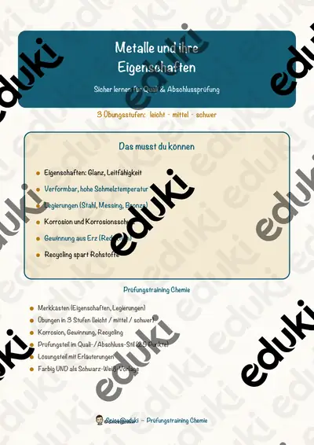
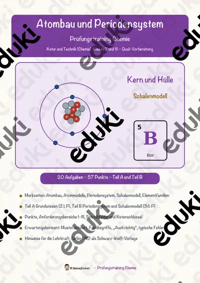

Atome, Elemente und Periodensystem: Arbeitsblätter für Klasse 8–10 (Chemie)
Atombau und Periodensystem ordnen die Welt der Elemente. In Klasse 8 bis 10 erarbeiten die Lernenden Atommodelle, Bindungen und Reaktionsgleichungen.
Gearbeitet wird in der Regel an Atombau, Periodensystem und Ionen, ergänzt um Moleküle, Metalle und Reaktionsgleichung.
In den Lehrplänen der Länder ist das Thema im Fach Chemie verankert, meist in der Sekundarstufe I (Klasse 8–10). Die Jugendlichen nutzen das Periodensystem und stellen Reaktionsgleichungen auf.
Ob Vertretungsstunde, Stationenarbeit oder Hausaufgabe: Die Arbeitsblätter zu Atome, Elemente und Periodensystem lassen sich flexibel einsetzen, etwa mit Atombau als Auftakt und Reaktionsgleichung als Abschluss. Musterlösungen sparen die Korrekturzeit. Leistungsstarke und schwächere Lesende erhalten über die Lesespurgeschichten Texte in drei Stufen.
Zum Thema finden Sie 7 Materialien, unter anderem Das Atom, Salze und Ionen und Metalle und ihre Eigenschaften, verteilt auf 2 Lesespurgeschichten, 4 Prüfungstrainings und 1 Lückentext mit Hörverstehen in Klasse 7–9. Ein Lernspiel mit Elementkarten trainiert Symbole und Eigenschaften.
Das gehört zum Thema
Passende Arbeitsblätter und Materialpakete

Das Atom – Lesespurgeschichte mit Rätselaufgaben (Klasse 8)

Der Atombau – Lesespurgeschichte mit Rätselaufgaben (Klasse 8)

Salze und Ionen – Prüfungstraining Chemie (Klasse 9)

Metalle und ihre Eigenschaften – Prüfungstraining Chemie (Klasse 8)

Atombau und Periodensystem – Prüfungstraining Chemie (Klasse 8)

Chemische Reaktionsgleichungen – Prüfungstraining Chemie (Klasse 9)

Periodensystem Lückentext mit Wortspeicher Hörverstehen und Suchsel
Häufige Fragen
Für welche Klassenstufe passen die Arbeitsblätter zu Atome, Elemente und Periodensystem?
Passend sind Klasse 7–9. Von den 7 Titeln wenden sich die meisten an Klasse 8, einige lassen sich differenzierend auch in benachbarten Stufen nutzen.
Welche Inhalte decken die Materialien zu Atome, Elemente und Periodensystem ab?
Die Materialien arbeiten an Atombau, Periodensystem und Ionen und gehen dann weiter zu Moleküle, Metalle und Reaktionsgleichung. Vorab lohnt ein Blick in den Lehrplan des eigenen Bundeslandes.
Wie setze ich Atome, Elemente und Periodensystem im Unterricht ein?
Ein Lernspiel mit Elementkarten trainiert Symbole und Eigenschaften. Danach genügt meist ein Material als Einstieg und eines zum Üben.
Mehr Material nach Fach und Klasse
Verwandte Lehrplanthemen
- Säuren, Laugen und Salze (Chemie, Klasse 8–10)
- Stoffe und Aggregatzustände (Chemie, Klasse 5–9)
- Verbrennung, Feuer und Sauerstoff (Chemie, Klasse 5–9)
- Bewerbung und Praktikum (Deutsch, Klasse 8–10)